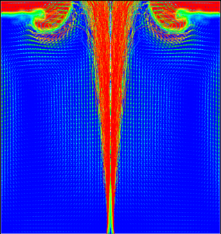
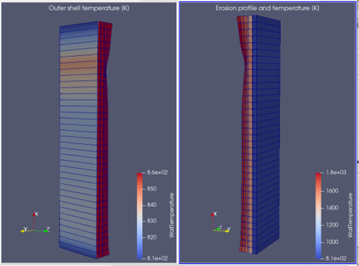
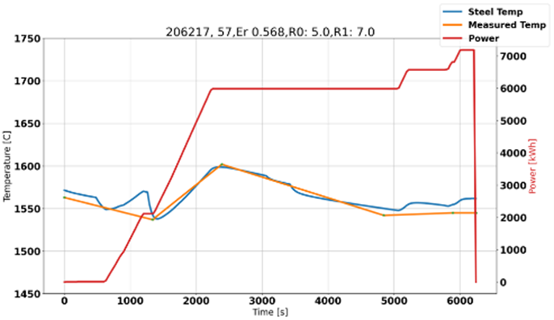
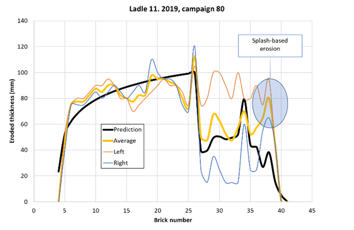

"Pragmatism in physics-based modeling" is a method/framework for developing physics-based mathematical models. Such models may serve as a digital twin alone or as companion with data-based AI/ML methods, to form hybrid digital twins to exploit the combination of data and physics-based modeling.
The purpose of "Pragmatism in physics-based modeling (PPBM)" is to device a generic methodology for development of physics-based models for application in digital twins. The PPBM provides a recipe for attacking a digital twin development, starting out from problem definition, information collection, including exact definitions of the output requirements for the model, assembling a system architects team, model specification, use of sub-level empirical or computed data, model building and application. The PPBM can only be developed further though application in industrial cases, like the Sidenor pilot case.
The physics, chemistry and numerical methods to be used may differ between applications, but PPBM should help the developers (system architects) to run though a set of well-defined steps on the way from problem definition to final application. For each new application using the PPBM new learning must be extracted and reported (published).
In the Sidenor pilot, applying and extending the PPBM method, we have developed a model for the ladle refractory erosion. In this pilot case offline data is mainly used – but the model has also been tested on online data. The data had multiple challenges, and many different approaches to clean or circumferent data flaws was implemented. The model task was to build a digital twin that can help operators to better decide when the steel ladles in the Sidenor steel plant have to be taken out for demolition and relining of the ladle refractory. The challenge is to use the ladle more times without compromising safety in the plant. The methods developed for design and implementation of the physics-based model is described [7] and the result was a physics-based model [6] that predicts the refractory wear. The model predicts the thermal state in steel, slag and refractory elements and is quasi two-dimensional (simplification for fast computations). Based on this the wear of the refractory is predicted along the vertical height of the ladle. In Figure A we see an example of the flow simulations that were used to build heat and mass transfer coefficients (one building block) for the overall model. In Figure B we see predicted temperatures and predicted erosion profile for one specific Sidenor ladle. For this specific case thermo-images of the surface temperature could have been used to corroborate the model predictions.
Figure A: Computational fluid dynamics prediction of bubble driven flow in a steel ladle was performed to obtain wall shear stress distribution for various operational situations. Bubble trajectories (mostly red color), steel (blue), slag (red) and velocity vectors can be seen.
Figure B Left: We see the outer surface temperature [K] of the ladle at the time when melt treatment is completed. Right: The predicted erosion profile is shown as well as the temperature in the different refractory layers. Visualised by Paraview.
Transient model prediction of steel temperature versus measured temperatures are shown in Figure C. As there is no measured temperature at the start of the ladle operation (the first appearing measurement point was found to be from previous heat) the initial temperature has to be found using an optimization scheme. The model has been tuned to the demolition data, using a significant amount of process data. Quantitative prediction of the lining erosion is compared to measurements in Figure E. This is a result of simulations of ladle erosion during 79 heats and where the upper part of the lining has been repaired at half way. The two measured curves is a result of the ladle being asymmetric with respect to teaming and gas injection nozzles, while the model is two dimensional. The black and yellow curves must therefore be compared.
Figure C: Predicted steel temperature evolution, measured temperatures and energy added to the ladle ("Power"), for Ladle 5, heat 206217.
Figure E Comparison of predicted versus measured eroded thickness for Ladle 11, campaign 80, 2019.
The model can easily be applied to similar operations in the metallurgical industry. In addition, the model, using the PPBM methodology, can easily be extended to metal refining by adding the metal chemistry to the model. The model can further be extended to 3D but that will slow the model considerably – and is not recommended before it can be demonstrated that 3-dimensional effects are the most important contribution to quantitative predictions.
The Sidenor application of the PPBM is currently reading data in ascii format (*.csv, *.xls) and output is saved as files in similar formats. In addition data can be saved in the VTK *.vts format. These files can be loaded into the Paraview (https://www.paraview.org/ ) tool for 3D visualization of the results.
The Sidenor model is using Python 3 and standard Python libraries. It can be run on both Windows and Linux systems.
The numerical model is open (free use) and can be downloaded from https://github.com/SINTEF/refractorywear, using the open source MIT license (https://opensource.org/licenses/MIT)
PPBM was applied in the Sidenor use case. The Sidenor application may later be exploited by COGNITWIN partners Elkem and Saarstahl.